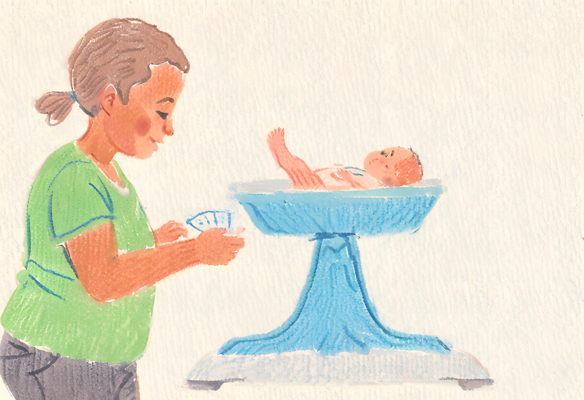

Step 2. Curating the data
As a data scientist you will learn to document and manage the data you analyse
Overview
In order to explore the relationship between birthweight and other factors we are going to need some data. For this guided tutorial we will use data collected at Baystate Medical Center, Springfield, Massachusetts during 1986. This dataset has ten variables collected on 189 mother-baby pairs.
Careful data curation is essential to a successful health data science project. Relevant tasks include building a data dictionary and developing a data management plan. A data dictionary documents the meaning, source, and format for the variables in a dataset, and the relationship between different datasets. A data management plan defines how data will be stored and accessed throughout the research cycle, from creation and acquisition to usage, and disposal. A well-defined data management plan also addresses risks associated with data, including security and rules to address the risk of statistical disclosure control.

Documenting the available variables
Before analysing a dataset it is imperative to understand the available data and how it was collected. The list below defines the variables recorded in the birthweight dataset.
low indicator of birth weight less than 2.5 kg.
age mother’s age in years.
lwt mother’s weight in pounds at last menstrual period.
race mother’s race (1 = White, 2 = Black, 3 = Other).
smoke smoking status during pregnancy.
ptl number of previous premature labours.
ht history of hypertension.
ui presence of uterine irritability.
ftv number of physician visits during the first trimester.
bwt birth weight in grams.
Viewing the raw data
It can often be useful to examine the raw data to get a feel for how it is recorded and any data issues, such as missing data. Below we have printed the first six rows for the birthweight dataset. We can see we have different types of variables available. Some are dichotomous (1=yes/0=no responses) like the indicators for smoking and low birthweight. Some are continuous, like maternal age measured in years and birthweight measured in grams.
Studying Health Data Science at UNSW Sydney
As a health data science student you will learn data wrangling skills and the day to day practicalities of data curation for sound data management in the course HDAT9400 Context for Health Data Science.
Data curation
Notice that the variable race is recorded numerically (1/2/3) rather than as a categorical variable. Looking back at the variable definitions above, we can see that 1 denotes the category White, 2 denotes the category Black and 3 denotes the category Other.
If we want to edit a dataset we always do so programatically, i.e. by writing code that will perform the necessary steps. This ensures that any steps we take can always be reproduced. Studying Health Data Science at UNSW you will learn three popular programming languages: SAS, Python and R. There are big advantages to being a programming polyglot—different software packages are particularly good at solving certain kinds of problems. An overview of the software used in different courses is provided here.
Here we can write some R code to reformat the race variable from numeric to a labelled categorical variable. Note that you can click on the Code icon to reveal the underlying code.
Code
# Recode race from numeric to a labelled factor variable
birthwt$race <- factor(birthwt$race, levels=1:3, labels=c('White', 'Black', 'Other'))
# Print the table
datatable(birthwt, rownames=FALSE, options=list(pageLength=6))That looks better! Now the race variable reflects the underlying coding.
Test your understanding
Test your understanding by answering these questions based on the information and interactive table above.
Choose the correct answer Which of these variables is not measured in the dataset?
Fill in the blank There is an outlier in the maternal age variable. The oldest mum was years old at the time of birth.
 Back to the main menu
Back to the main menu  Step 3. Exploring the data
Step 3. Exploring the data